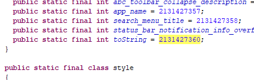
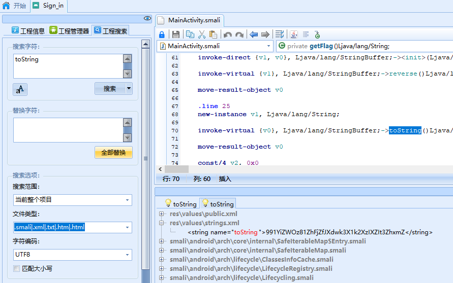
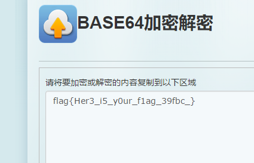
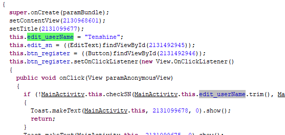
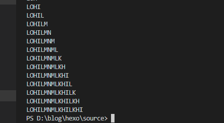

signin
第一题，估计就是用一下工具，然后把flag找出来就ok了，首先把akp改成rar格式的，找到.dex文件，dex转jar，打开jar就得到java代码了，关键点在这里1
2
3
4
5
6
7
8public void checkPassword(String paramString)
{
if (paramString.equals(new String(Base64.decode(new StringBuffer(getFlag()).reverse().toString(), 0)))) {
showMsgToast("Congratulations !");
} else {
showMsgToast("Try again.");
}
}
传入一个数据先reverse，然后再base64解密，getFlag函数如下1
2
3
4private String getFlag()
{
return getBaseContext().getString(2131427360);
}
找到这个id为toString

搜索toString

之后反向字符串，base64解密得到flag

mobile1(gctf)
同样先反编译得到java代码，关键点在这1
2
3
4
5
6
7
8
9
10
11
12
13
14
15
16
17
18
19
20
21
22
23
24
25
26
27
28
29
30
31
32
33
34
35private boolean checkSN(String paramString1, String paramString2)
{
if (paramString1 != null) {
try
{
if (paramString1.length() == 0) {
return false;
}
if ((paramString2 != null) && (paramString2.length() == 22))
{
Object localObject = MessageDigest.getInstance("MD5");
((MessageDigest)localObject).reset();
((MessageDigest)localObject).update(paramString1.getBytes());
paramString1 = toHexString(((MessageDigest)localObject).digest(), "");
localObject = new StringBuilder();
int i = 0;
while (i < paramString1.length())
{
((StringBuilder)localObject).append(paramString1.charAt(i));
i += 2;
}
paramString1 = ((StringBuilder)localObject).toString();
boolean bool = ("flag{" + paramString1 + "}").equalsIgnoreCase(paramString2);
if (bool) {
return true;
}
}
}
catch (NoSuchAlgorithmException paramString1)
{
paramString1.printStackTrace();
}
}
return false;
}
分析可得，这边接受两个参数，第一个不能为空，且长度不能为0，第二个参数也不能为空，且长度为22，然后经过一个md5但是取偶数位。方法在下面被调用，参数1也在下面有定义。

逻辑很清楚了，反解密得到flag1
2
3
4
5
6
7
8
9
10
11
12
13
$str = 'Tenshine';
$para1 = md5($str);
echo $para1;
$flag ='';
for($i=0;$i<=32;$i++){
$flag = $flag.$para1[$i];
echo '<br/>';
echo 'flag{'.$flag.'}';
$i += 1;
}
First_Mobile(xman)
先反编译出java代码,main函数的关键代码1
2
3
4
5
6
7
8
9
10public void onClick(View paramAnonymousView)
{
new encode();
if (encode.check(paramBundle.getText().toString()))
{
Toast.makeText(MainActivity.this.getApplicationContext(), "correct", 1).show();
return;
}
Toast.makeText(MainActivity.this.getApplicationContext(), "failed", 1).show();
}
跟踪进encode1
2
3
4
5
6
7
8
9
10
11
12
13
14
15
16
17
18
19
20
21
22
23public class encode
{
private static byte[] b = { 23, 22, 26, 26, 25, 25, 25, 26, 27, 28, 30, 30, 29, 30, 32, 32 };
public static boolean check(String paramString)
{
byte[] arrayOfByte1 = paramString.getBytes();
byte[] arrayOfByte2 = new byte[16];
int i = 0;
while (i < 16)
{
arrayOfByte2[i] = ((byte)((arrayOfByte1[i] + b[i]) % 61));
i += 1;
}
i = 0;
while (i < 16)
{
arrayOfByte2[i] = ((byte)(arrayOfByte2[i] * 2 - i));
i += 1;
}
return new String(arrayOfByte2).equals(paramString);
}
}
逻辑还是比较简单的，最后返回一个equals，也就是说传进去的值跟定义的第二个数组相同，可以看作是一道数学题，x=((x+b[i])%61)*2-i,python代码如下1
2
3
4
5
6
7b = [23, 22, 26, 26, 25, 25, 25, 26, 27, 28, 30, 30, 29, 30, 32, 32]
flag = ''
for i in range(16):
for x in range(33,126):
if(x==((x+b[i]) % 61)*2-i):
flag +=chr(x)
print(flag)
得到答案，不过提交失败，百度了一下才知道前面还有个前缀XMAN
